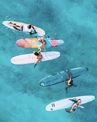

single fin
El surf es un arte y un single fin dibuja lineas seriamente artisticas
El single fin promueve un estilo de surf mas lento y meloso que se adapta a cualquier surfista, una verdadera forma de apreciar el alma del surf.

Historia
- La primera quilla fija fue introducida por el pionero del surf Tom Blake en 1935. En Waikiki, Blake colocó una quilla de metal de 30 cm (12 pulgadas) de largo y 10 cm (4 pulgadas) de profundidad de una lancha motora abandonada en su tabla de surf, y quedó inmediatamente impresionado con Los resultados.
- Alrededor de 1936, Woody Brown agregó de forma independiente una aleta fija a su segundo diseño de tabla de surf en San Diego, lo que popularizó aún más la característica.
Características
- Una tabla de surf de una sola quilla mostrará menos resistencia que las contrapartes de propulsor/quad.Menos arrastre ayuda a promover la velocidad en la línea y es mejor para giros más largos y prolongados.
- Esta aleta única aumenta el radio de giro disponible de la tabla
y hace que las maniobras de alto rendimiento sean más desafiantes.